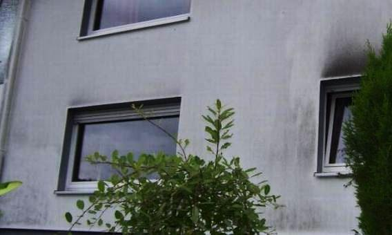
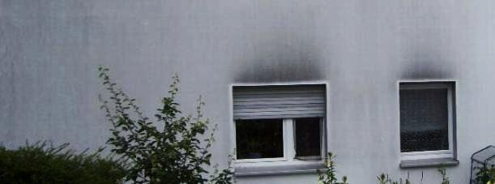

Oder auch so: 

Im Detail:
Schön, wie sich die besseren Wärme-Speichereigenschaften der WDVS-Teller-Dübel an der geringeren Vergrünung und Verschwärung mit Grünalgen, Schwazalgen, Stau, Öl und Rüß sofort punktgenau nachweisen lassen.
(Abbildung "Algenbefund auf der WDVS-Fassade" aus "[Forschung] Wärmedämmung; Zur EnEV: 1.
Grünes Hinweisschild + 2. Schotten dicht"
in: Bautenschutz+Bausanierung, Zeitschrift für Bauinstandhaltung und Denkmalpflege,
Januar 2002, S. 44, Bildautor: Hochschule Wismar, Bildbearbeitung K.F.)
Ein dimagb.de-Bilder-Rätsel der Dämmtechnik. Sehr zu empfehlen!!!

Abbildung: Eine verschindelte Mineralwolledämmung auf Ziegelmauerwerk von außen - mit frischen
Nässespuren der vollgesoffenen Dämmung am Sockel, und von innen - die Schimmelpilzzucht
(Bildquelle: Dipl.-Ing. Steier, Fa. Thermotech).


Aus einem Werbeprospekt der Wülfrather Zement GmbH (01.98):
Aus alt mach neu ...
Millionen Quadratmeter Fassadenflächen in ganz Deutschland sind sanierungsbedürftig. Dazu gehören viele Fassaden, die mit 3 bis 5 cm dicken Polystyrol-Dämmplatten in Verbindung mit einer Oberbeschichtung aus Kunstharzputzen beschichtet sind. Leicht zu erkennen an der Rißbildung, der Ablösung des Oberputzes, auch Blasenbildung genannt, und der Veralgung.
Von Zeit zu Zeit durchgeführte Renovierungsanstriche der schadhaften Flächen mit kunstharzgebundenen Farben können zwar kurzfristig die Optik der Fassaden verbessern, führen aber langfristig nur zu einer weiteren Verschlechterung der Diffusionsfähigkeit. Das Ergebnis: So "geschönte" Fassaden erfordern bereits nach kurzer Zeit eine aufwendige, kostenintensive Sanierung.
[...] Die Lösung:
Das patentierte Wülfrather ReTec®-Verfahren, bei dem die gesamte Fassade aufgeschlitzt wird.
Diese Technik gewährleistet nicht nur eine optimale Haftung des ReTec®-Mörtels, sondern sorgt auch für eine wesentliche Verbesserung der Diffusion, die sonst durch den Kunstharzputz stark eingeschränkt ist.
[...]
1. Zuerst wird die Oberfläche des kunstharzgebundenen Putzes mit einem Dampfstrahlgerät gründlich gereinigt.
Um ein Aufweichen bzw. Aufquellen des Kunstharzputzes zu vermeiden, dürfen Temperatur und Druck nicht zu hoch gewählt werden.
2. Anschließend wird die Fassade horizontal und vertikal z.B. mit Hilfe einer Fräse partiell geschlitzt. Das Rastermaß der Schlitze richtet sich nach dem jeweiligen Zustand der [durchfeuchteten, abgesoffenen (Ergänzung Fischer)] Fassade (von ca. 15 x 15 cm2 bis 30 x 30 cm2). Die Schlitzbreite beträgt 5-7 mm, die Tiefe ist so zu wählen, daß die Schlitze ca. 5 mm in den Untergrund (z.B. Kalk-Zementputz oder Dämmplatte) hineinragen. [...].
Mein Vorschlag zur Güte: WDVS gleich mit Schlitzen liefern. Das erleichtert die spätere Sanierung der Sanierung und sieht obendrein schick aus. Aus der Ferne wie eine geflieste Bedürfnisanstalt von innen. Auch die neuesten und heute vorschriftsgemäß schadensträchtigen WDVS eignen sich zur Vermarktung von Intelligenzkonzepten wie kapillarsperrende Beschichtungssysteme nach Künzel.
Einem Promotionartikel der Wülfrather Zement in der Zeitschrift "Bautenschutz+Bausanierung" 8/99 entnehmen wir folgende Ausführungen (die bemerkenswerten Schadensfotos von durchgerissenen, abgelösten und verschimmelten WDVS-Fassaden sparen wir uns hier, fordern Sie bei Interesse das Heft direkt bei der Redaktion Tel.: 0221-5497-321/Fax: 0221-5497-326 an):
"Dr. Markus Hildebrandt:
WDVS
Draufsatteln [...]
Eine häufig anzutreffende Rißbildung entlang der Plattenstöße [KF: Igloeffekt, in USA auch Sto-Effekt genannt] resultiert einerseits aus der "Materialermüdung" der als Spachtelung (ca. 2 mm) ausgeführten Armierungsschicht und andererseits aus der großen mechanischen Beanspruchung in diesem Bereich.
[...] Unter Temperatureinwirkung traten dann im Dämmplattenstoß größere Bewegungen auf, die auf Dauer von den dünnen Armierschichten nicht verkraftet worden sind.
Die zunächst entstehenden feinen Haarrisse wären z.B. bei mineralischen Putzsystemen auch auf Dauer unbedenklich. Wenn jedoch das über die Risse eingedrungene Wasser, aufgrund der ungünstigen feuchtetechnischen Eigenschaften der organischen Beschichtungen, nicht schnell genug wieder aus dem System hinaustransportiert werden kann, kommt es im Laufe der Zeit zu einer Vergrößerung der Risse. (Abb. 2).
Schließlich führt das, aufgrund der dauerhaften Hinterfeuchtung in diesem Bereich, zur Ablösung des Oberputzes oder des gesamten Putzsystems von der Platte (Abb. 3 und 4). In diesem Zusammenhang sind auch vielfach mit Wasser gefüllte Putzblasen (Ausbeulungen) (Abb. 5) zu sehen.
Weiteres Schadensbild:
Verschmutzung und Algenbewuchs
Bei WDVS liegen die Putzsysteme im kalten Bereich, da wegen der hohen Wärmedämmung der Dämmplatten im Winter nur wenig Wärme von innen auf das Putzsystem übertragen wird.
Dies hat zur Folge, daß Niederschlagswasser, das in das Putzsystem eingedrungen ist (die Putze sind wasserabweisend, aber nicht wasserdicht), nur langsam wieder entweichen kann.
In diesem Zusammenhang spielen die bekannten feuchtetechnischen Unterschiede zwischen organischen und mineralischen Putzschichten eine Rolle. Während bei [...] mineralischen Putzen eingedrungene Feuchtigkeit extrem schnell wieder entweichen kann [Anm. KF: gilt nur bei reinen Luftkalk-Mörteln!, da ansonsten den mineralischen Putzen meist feuchterückhaltende Zuschläge wie Methylzellulose, Hydrophobiezusatz und hydraulische Bindemittel zugesetzt werden sowie regelmäßig stark feuchtespeichernde Kleinporenstruktur vorliegt;], dauert der Vorgang bei organischen Beschichtungen wesentlich länger.
Die Folge ist, daß die Kunstharzputze sich quasi im dauerfeuchten Zustand befinden. Damit ist die Hauptvoraussetzung für ein Algen- oder Schimmelwachstum erfüllt (Abb. 6). Das Resultat sind grüne und schwarze Bewüchse an den Fassaden, die zu den bereits geschilderten Rißschäden dazukommen und sich teilweise gegenseitig verstärken.
[Textblock]
WDVS-Sanierungsbedarf
Mehrere Millionen m2 Fassadenflächen sind allein in ganz Deutschland
sanierungsbedürftig.
Hierzu gehören auch viele Fassaden, die mit einem Wärmedämm-Verbundsystem versehen sind. Die Systeme
wurden in der Vergangenheit oft mit Dämmstoffdicken von 4 cm und Beschichtungen
aus Kunstharzputzen hergestellt. [...]
Sanierung - der allgemeine Stand der Technik
Eine der am meisten angewandten Sanierungsverfahren ist das Aufbringen eines Anstriches, was allerdings in der Regel nur für intakte, d.h. nicht gerissene Systeme, empfohlen wird. Das bedeutet, daß es hierbei nur um eine optische Verschönerung geht.
Wenn Risse zu sanieren sind, kommen teilweise sogenannte rißüberbrückende Anstriche zum Einsatz, die allerdings die beschriebenen Schäden nicht dauerhaft beheben können, da die Rißflankenbewegung zu groß ist.
Hinzu kommt, daß viele der eingesetzten Anstriche den bauphysikalischen Zustand der Systeme weiter verschlechtern, da es sich um Beschichtungen mit hohen sD-Werten handelt. Werden solche Anstriche mehrmals vorgenommen, was oft der Fall ist, da sie nur eine kurzfristige Kosmetik darstellen, kommt zu der Schlagregenbelastung von außen zusätzlich ein Tauwasseranfall im Inneren des Systems.
Drastisch ausgedrückt: Das System säuft im Laufe der Zeit ab. Eine wirkliche Sanierung eines solchen Systems wird dadurch immer schwieriger und kostenintensiver. Vielfach werden die Systeme dann komplett abgerissen.
Eine andere Möglichkeit besteht darin, erneut eine Armierungsschicht aufzubringen. Für eine ausreichende und dauerhafte Haftung auf der alten organischen Beschichtung müssen wiederum Armierungsschichten mit hohem Dispersionskleberanteil gewählt werden.
Dadurch kommt es zu einer weiteren Verschlechterung der Wasserdampfdurchlässigkeit des Systems, und die Oberfläche ist wiederum mit Werkstoffen hergestellt, die die oben beschriebenen ungünstigen Eigenschaften aufweisen.
Wenn die alten Putzbeschichtungen keine ausreichende Haftung untereinander oder am Dämmstoff aufweisen, ist die Standsicherheit beim Aufbringen einer neuen Putzschicht nicht gewährleistet. Die Dauerhaftigkeit einer solchen Sanierung muß daher in Frage gestellt werden.
Als letzte Möglichkeit besteht der Abbau und die Entsorgung des schadhaften WDVS. Die Kosten hierfür sind beträchtlich. Dazu kommt die Dreckbelastung, die während des Abbaus entsteht. Eine befriedigende, preiswerte und dauerhafte Lösung existierte im vorgenannten Sinne also bisher nicht."
Und ob das vom Verfasser vorgeschlagene aufwendige Applizieren von Zementmörtel hier dauerhafte Besserung verspricht, darf bezweifelt werden. Zementmörtel ist ja für seine hohe Wasserrückhaltung und Versprödungsneigung wohlbekannt.
Auch Prof. Dr. Dr. Venzmer, Dahlberg-Institut Wismar berichtet auf den 11. Hanseatischen Sanierungstagen 2000 lt. Bautenschutz und Bausanierung 1/2001:
"Wärmegedämmte Außenwandflächen von neuen und sanierten Wohngebäuden werden deutlich stärker als andere ungeschützte Flächen von Algen befallen!
Demnach weisen bis zu 50% von Großtafelbauten in mehreren Städten Norddeutschlands den auffälligen Bewuchs auf."
Haben die beteiligten Architekten/Ingenieure/"Bauphysiker"/Unternehmen den Kunden vor diesem seit langem bekanntem Risiko seines Energiesparwahns pflichtgemäß (Beratung als vertragliche Nebenpflicht mit zigjähriger Haftung!) gewarnt? Wer hat nun die Schadensersatzpflicht? Der Hersteller der schlechten Baustoffe im Rahmen seiner Produkthaftpflicht? Und was, wenn die feuchten Fassaden soweit aufgefeuchtet sind, daß die Feuchte durchschlägt und die abgedichtete Dämmwohnung zusätzlich mit der ohnehin schlecht abgelüfteten Wohnfeuchte noch mehr zum Schimmelpilzbefall gezwungen wird? Mit Gesundheitsrisiken und Krankheitsrisiken vom Asthma über Allergie bis zur kompletten Körpervergiftung als logische Folgen zu feuchter Wohnung? Fragen über Fragen. Lesen Sie dazu auch mal hier nach: Mit WDVS-Wärmedämmung sanierte Häuser massenhaft von Algen befallen.
Wenn Sie wissen wollen, wie es um die WDVSe wirklich aussieht, gehen Sie mal mit einer handelsüblichen Feuchtemeßsonde an derartige Kunststoff-Fassaden heran und überprüfen Sie diese mir vorliegenden Meßwerte eines Bausachverständigen (Dämmstoff EPS, Ablesung Display 10.4.2000, Steigende Meßwerte = Steigender Feuchtegehalt):
- 11,3 (Aussen-Kontakt auf der Dämmung)
- 97,0 (ca. 6 cm in der Dämmung)
- 145,6 (Kontaktfläche Aussenwand-Dämmung)
Wissen Sie, daß schon 5% Feuchte den Dämmwert angeblich (!) um ca. 50% reduzieren? Und welchen U-Dämmwert wird ein derartig abgesoffenes WDVS wohl haben? Dabei sieht es in Wahrheit freilich anders rum aus: Ein nasser Baustoff kann mehr Wärme speichern, damit verlangsamt sich der Wärmedurchfluß, die Energiesparwirkung
Und wissen Sie, wie es an dieser Kontaktfläche zwischen WDVS und Wand wirklich aussieht?
Ja, die deutsche Bauwirtschaft darf den Professoren Gertis, Hauser, Ehm (+) und Werner (u.a.), wohlbekannt aus "Fachseminaren", also ewig dankbar sein. Deren Produkte "DIN 4108" und "WSVO/EnEV" liefern Arbeitsplätze auf Dauer. Sogar für die Müllwerker. Obwohl das energetisch rein garnix bringt, vgl. diese Meßwertanalyse von Prof. Fehrenberg.
Beispiel aus einer Presse Information der Wüstenrot Holding AG 8/99, witzigerweise als "Wüstenrot-Ratgeber" tituliert [Kommentare in Klammern von Konrad Fischer]:
"Wenn Algen und Pilze auf der neuen Hausfassade wuchern
Mit Recht ist der Hausbesitzer ärgerlich, wenn mit viel Geld und Energiesparwillen modernisierte Hausfassaden in kürzester Zeit wieder verschmutzt sind. Was wurde falsch gemacht? Oft liegt eine Verkettung bauphysikalischer Vorgänge zugrunde, stellt Wüstenrot fest
[woher die Kompetenz?]
und gibt Hinweise, wie Schäden zu vermeiden oder zu beheben sind.
Als Hausbesitzer Alfons Marquard seinen örtlichen Fassadenspezialisten
[seit wann sind gutgläubige bzw. von Bauschadenserzeugung lebende Handwerker "Fassadenspezialisten"?]
beauftragte, sein Wohnhaus mit einer vollwärmegedämmten Schutzhülle zu versehen, wollte er die nächsten Jahre Ruhe an der Hausfront haben. Einige Monate später lag er mit dem Fachhandwerker im Streit. Was war geschehen? Schon nach wenigen Wochen zeigte sich zunächst ein leichter grüner Hauch auf dem neuen Wärmedämmverbundsystem. Er entpuppte sich im weiteren Verlauf als intensiver schmieriger grüner Belag auf der Außenhaut.
[Das gibt es heute fast in jeder Straße.]
Insbesondere an den Nord- und Westseiten des Gebäudes wucherte der Schmutzfilm aus.
[Hoffentlich haftet der Fassadenspezi nun auch für die fehlende Beratungspflicht und Bedenkeneinlegung gegen unwirtschaftliche und bauschadensverursachende Dämmung.]
Der Befund eines hinzugezogenen Sachverständigen: Algen- und Pilzbewuchs. Bei Algen handelt es sich in erster Linie um einen ästhetischen Mangel. Der optische Störenfried führt auf mineralischen Untergründen zu keinen materiellen Schäden.
[Typisch Schwachverständiger - weiß er denn nicht, daß auf WDVS ausschließlich kunstharzverschnittene, kapillarentfeuchtungsblockierende Anstriche kleben, die teils unter dem Begriff "mineralisch" dem Kunden aufgeschwätzt werden? Und daß Veralgung darauf sehr wohl zu strukturellen Schäden und beschleunigter Alterung führt? Da dieser Artikel letztlich der Vermarktung solcher Klebpampe dient, könnte dies allerdings auch ein Unterschlagen der tatsächlichen Zusammenhänge sein.]
Pilze dagegen können die Fassade angreifen.
Die Ursachen
Die unliebsamen mikrobiellen Hauswandbewohner, Algen und Schwärzepilze haben einen gemeinsamen Nenner. Wie alle Lebewesen brauchen sie Feuchtigkeit. Sie entsteht durch Schlagregen, aber auch durch Temperaturunterschiede zwischen Tag und Nacht.
[Gemeint ist die tägliche Kondensation aus der feuchtetragenden Umgebungsluft an kühleren Flächen.]
Dazu kommt, daß Vollwärmedämmfassaden ein sehr geringes Wärmespeichervermögen haben. Nach Sonnenuntergang kann die Temperatur innerhalb weniger Minuten leicht um 20 Grad Celsius sinken.
[Sehr richtig! Und jetzt kommt der Infrarotfotograf im Auftrag des Fassadenspezi zum Zuge: Er fotografiert nun die blaufeuchtkalten Dämmbereiche, während die speicherfähigen Massivbereiche noch gemütlich die kostenlos eingefangene Sonnenenergie gelbrot abstrahlen. Käme er zur Mittagszeit, hätte die Dämmfassade allerdings 70 Grad und die Massivwand 30. Klaro?]
Die Folge: Der Taupunkt wird unterschritten - es entsteht Kondenswasser.
[Richtig! Es wird in die zwar wassersperrende aber lt. Werbeaussagen dampfdiffusionsoffene kunstharzhaltige Beschichtung (Putz/Anstrich) begierig eingesaugt und dort angestaut. Viele Stunden leidet ja ein nicht speicherfähiges WDVS unter deutlicher Unterkühlung gegenüber der der zwar kalten, aber im Vergleich zur angeblich "wärmegedämmten Fassade" wesentlich wärmeren Nachtluft und nimmt dabei immer Kondensat ohne Ende auf. Die Brühe kann dann durch das bauphysikalisch falsche Kunstharz-Beschichtungssystem nie richtig austrocknen und bietet so dem scheußlichen Algenbefall allerbeste Nahrungsgrundlage - gerade im Verbund mit dem immer leicht sauren Plastikanstrich bzw. auch Plastikputz / Kunstharzputz.]
Zusätzlich gefährdet sind Gebäude mit hohem Baumbewuchs in der unmittelbaren Umgebung. Die grüne Front hält die Sonnenstrahlung ab, das Abtrocknen der Fassadenoberfläche erfolgt langsam oder gar nicht.
[Das gilt auch für die zwangsläufig unter und in der kunstharzbeschichteten bzw. hydrophobierten Dämmpackung entstehende Feuchtigkeit - Folge: "abgesoffene Wärmedämmung".]
Idealer Nährboden für Mikroorganismen. Einen - allerdings eher fragwürdigen - Vorteil haben Fassaden von Häusern, die 30 Jahre oder älter und weniger dick eingepackt sind: Die Gefahr eines unerwünschten Bewuchses ist dort weniger groß, weil unter hoher Energieverschwendung der Fassadenaufbau und damit deren oberste Schicht von innen her eher abtrocknen kann.
[In Wirklichkeit speichern Massivbauten die Sonne tagsüber und auch im Winter ein und werden dadurch eben besser trocken. Voraussetzung: Kein kunstharz- bzw. silikathaltig trocknungsblockierender Anstrich/Verputz. Selbstverständlich kommt die so kostenlos eingespeicherte Sonnenenergie auch dem Energiehaushalt zugute. Energie- und Geldverschwendung sind bisher nur an gedämmten Häusern praktisch erwiesen, das zeigen umfangreiche Untersuchungen (z.B. Bosserts Energieverbrauchsanalyse, Wichmann und Varsek, Therma-Wettbewerb, GEWOS-Untersuchung).]
Außerdem enthalten die Farbpigmente früherer Anstrichfarben Schwermetallverbindungen, die einen mikrobiellen Bewuchs verhindern.
[Gilt selbstverständlich nicht für Erdfarben in Kalktünchen, die ebenfalls bewuchsverhindernd waren und sind.]
Das längst verbotene
[gilt nicht in der Denkmalpflege]
Bleiweiß
[wurde in den vorwiegend mineralischen Fassadenfarben nicht, sondern nur bei - eher selten bzw. auf bestimmte Regionen beschränkt anzutreffenden - Ölfarben auf Fassaden eingesetzt. Bleiweiß wurde und wird vorwiegend Ölfarben auf Holz - z.B. für Fensteranstriche - beigemischt.]
beispielsweise ist der reinste Pilzkiller."
Das abschließende Getrommel, kumulierend in Lotuseffekt, Superhydrophobie und Kunst(Silikon)-Harzanstrich sparen wir uns.
Noch besser dann das Öko-Test Spezial Umwelt & Energie vom Dezember 2008 auf Seite 105:
"Passivhaus - die aktive Altersvorsorge." Hier wird ein Herrenberger Ehepärchen vorgeführt, das sich
von dem "Passivhaus-Papst" Wolfgang Feist (stammt bezeichnenderweise ebenfalls aus Herrenberg!) persönlich zu
einem Passivmonster stimulieren ließ. Und was nicht alles in diesem Holzbretterbüdli alles zur
Ausführung gelangt, selbstverständlich mit konstruktiver Hilfe eines passivhauserfahrenen Planers:
30 cm Wärmedämmung aus Hartschaum wurde unter der Bodenplatte des kellerlosen Büdlis verbuddelt, im
Boden dann noch 80 mm Polystyrol-Dämmung, 36 cm "relativ preiswert" (!) eingeblasene und selbstverständlich
boratverseuchte Zellulosefaser aus Altpapier in der Wand aus Holzstaketen und Lärchenholzschalung, gar 40 cm
zwischen den Dachsparren plus paraffinierte Holzfaserplatte sowie angeblich feuchtevariable (in Wahrheit gem.
Untersuchungen der FH Hildesheim, Prof. Möring bald dicht verschleimende) Dampfbremse, dreifachverglaste und mit
dem Edelgas Argon gefüllte passivhauszertifizierte Wärmeschutzfenster mit einer abstrahlungsblockierenden
Spezialbeschichtung, ein Scheitholzkessel mit Wärmetauschereinsatz, dazu elf Quadratmeter Solarkollektoren auf dem
Dächli, eine Zwangslüftungsanlage mit Wärmerückgewinnung, Zulufttemperierung durch einen
Erdwärmetauscher, der mit einer Umwälzpumpe sein Sole-Wasser aus 80 Meter Kunststoffrohren bezieht, die ein
Meter tief im Gärtli verbuddelt wurden, sowie noch ein paar sonstige Ökofinessen wie eine
Regenwassersammelanlage und selbstverständlich - man gönnt sich ja sonst nix - schon mal die Vorbereitung
für eine nachzurüstende Photovoltaikanlage. Ja, solch konsequenter Umweltschutz macht eben Spaß.
Doch zu welchem Preis? Na, ja, im Artikel steht, daß die 125 qm Wohnfläche in den Kostengruppen 300 und 400 satte
315.000 Euro kosten, zuzüglich Baunebenkosten (Kostengruppe 700) dürften so ca. 380.000 Euro zusammengekommen
sein - wenn's langt. Macht 3040 EUR/qm WF. Für diesen Preis bauen Banken ihre Hauptsitze.
Hätte der oberstolze schwäbische Passivhausbesitzer ein normales kellerloses Häusli mit 125 qm gebaut,
z.B. mit 36,5 vollen Backsteinen und Massivholzdämmung, hätte er alleine vom Ersparten die nächsten
100.000 Jahre heizen können. Legt man nämlich die bei normalen Hauskosten von ca. 1.440 EUR/qm locker
einzusparenden 200.000 EUR mit nur 3 Prozent Zins an, bekommt man jährlich 6.000 EUR Zinsgewinn ausbezahlt. Was
bedeuten demgegenüber die Passiv-Geschäftle laut Werbeaussage der Ökotestredaktion?:
"Schon beim aktuellen Preisniveau ist das (sparsame Passivhaus) auf lange Sicht ein gutes Geschäft, denn die
(Passivbauherren) sparen etwa 800 Euro (Energiekosten) pro Jahr."
Mööönsch, Pisa ist wirklich überall!. Allein die ersparbaren Baukosten dürften mehr als locker
reichen, um die 125 Quadratmeterchen warmzuheizen, selbst mit Edelholz oder Olivenöl extra Vergine. Leute, kann
man sich eine größere Umweltverschmutzung als durch eine solche ökoinduzierte Ressourcenvergeudung noch
vorstellen? Ja, so ist er eben, der sparsame Passiv-Schwabe in Herrenberg, Allzeitchampion in seinen typischen drei
Geizdisziplinen:
1. Mit dem Schinken nach der Wurst werfen, 2. Die Brüh teurer als die Wurst kochen und 3. Saving the Penny and
losing the Pound. So schlägt man ganz persönlich die BW-Landesbank in der Finanzkrise.
| Bauteil, Art der Leistung | Instand- setzungs- intervall |
Kosten | Jahre | Kosten nach 80 Jahren [inkl. Neben- kosten + Ust Inflation 2%) |
Kosten im Jahresdurch- schnitt |
|||||||||||||||
| Außenwände | [Jahre] | [EUR/m²] | 5 | 10 | 15 | 20 | 25 | 30 | 35 | 40 | 45 | 50 | 55 | 60 | 65 | 70 | 75 | 80 | [EUR/m²] | [EUR/m²] |
| Außenwand mit Verblendmauerwerk | 284,73 | 3,56 | ||||||||||||||||||
| Verfugung ausbessern | 20 | 7,67 | . | . | . | x | . | . | . | x | . | . | . | x | . | . | . | x | 89,10 | 1,11 |
| Gerüstvorhaltung | 20 | 7,67 | . | . | . | x | . | . | . | x | . | . | . | x | . | . | . | x | 89,10 | 1,11 |
| Mauerwerk säubern | 40 | 15,34 | . | . | . | . | . | . | . | x | . | . | . | . | . | . | . | x | 106,53 | 1,33 |
| Außenwand mit Standardputz (mit Anstrich | 566,36 | 7,08 | ||||||||||||||||||
| Neuer Anstrich | 15 | 25,56 | . | . | x | . | . | x | . | . | x | . | . | x | . | . | x | . | 333,09 | 4,16 |
| Putzausbesserung | 15 | 10,23 | . | . | x | . | . | x | . | . | x | . | . | x | . | . | x | . | 133,32 | 1,67 |
| Gerüstvorhaltung | 15 | 7,67 | . | . | x | . | . | x | . | . | x | . | . | x | . | . | x | . | 99,95 | 1,25 |
| Außenwand aus Holzständerwerk mit Holzschalung | 650,47 | 8,13 | ||||||||||||||||||
| Streichen | 5 | 5,11 | x | x | x | x | x | x | x | x | x | x | x | x | x | x | x | x | 205,92 | 2,57 |
| Gerüstvorhaltung | 5 | 7,67 | x | x | x | x | x | x | x | x | x | x | x | x | x | x | x | x | 309,63 | 3,87 |
| neue Holzschalung | 50 | 51,13 | . | . | . | . | . | . | . | . | . | x | . | . | . | . | . | . | 134,92 | 1,69 |
| Außenwand mit Wärmedämm-Verbundsystem | 1.314,05 | 16,43 | ||||||||||||||||||
| Reinigung und Pflege | 5 | 7,67 | x | x | x | x | x | x | x | x | x | x | x | x | x | x | x | x | 309,63 | 3,87 |
| Gerüstvorhaltung | 5 | 7,67 | x | x | x | x | x | x | x | x | x | x | x | x | x | x | x | x | 309,63 | 3,87 |
| Putzausbesserung | 10 | 7,67 | . | x | . | x | . | x | . | x | . | x | . | x | . | x | . | x | 162,21 | 2,03 |
| Neues WDVS | 40 | 76,69 | . | . | . | . | . | . | . | x | . | . | . | . | . | . | . | x | 532,58 | 6,66 |
Glanzlichter dieser Seite:
Aktuelles
Einleitung
Apokalypsenlyrik
Wärmedämmung oder -speicherung, "Wissenschafterkenntnis"
der etablierten Bauphysik?
Kommentierte Meldungen zum Wohnklima und der "Niedrig"-Energiebauweise
Nachhilfeunterricht in energiesparendem und wohngesundem Bauen
Das Professorenrätsel
Interessante Schimmellinks
Prof. Dr.-Ing. habil. Claus Meier bauphysikalische Beiträge
Empfehlenswerte Klima- und Umweltliteratur
Temperierung/Strahlungsheizung
Anfragen und Antworten zu Bauproblemen
Das Handwerkerquiz + Das Planerquiz für schlaue Bauherrn
Zum besseren Bauen, Energiesparen und der Klimafrage
Fenster-"Aufklärung"
Dämmstoffe im Zwielicht - Das Lichtenfelser Experiment
Die gängigen Klimalügen